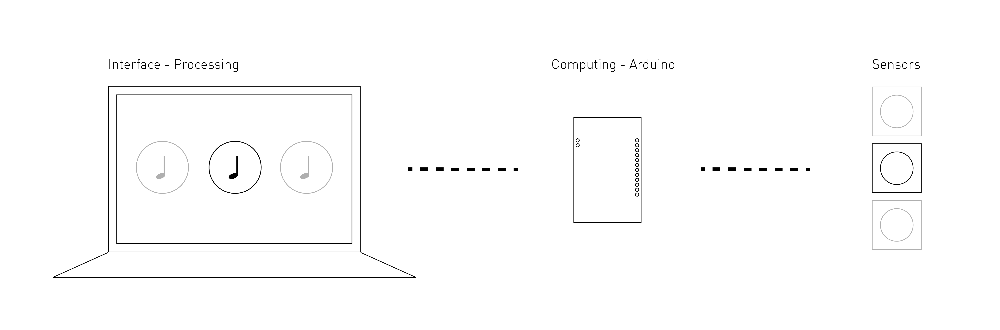
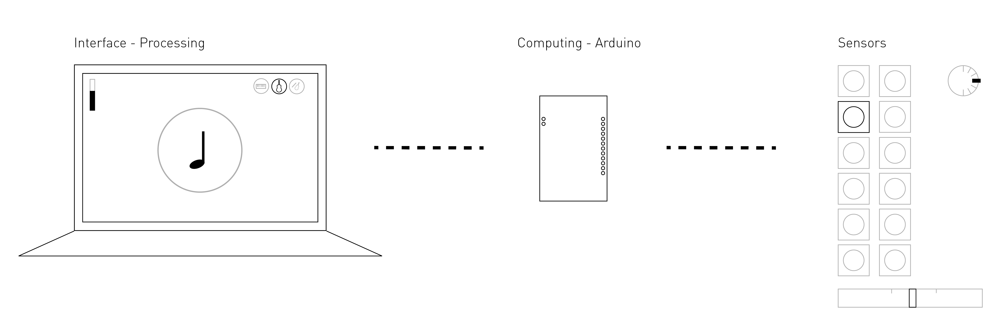

For IAT 267: Introduction to Technological Systems, my team and I were tasking with creating an interactive system using sensors, an Arduino microcontroller and Processing for programming. Through this project, I was able to develop my programming competency and my problem-solving skills and learned how to assess my own skillsets in order to set deadlines and milestones.
IDEATION
Based on the assignment brief and suggested topics, we ideated on possible projects. We decided to emulate a sort of MIDI device, designed to teach children various sounds based on an environment sensor. Though we initially felt we should teach animal sounds, we eventually moved onto teaching musical notes and various instrument sounds. This would allow us greater access to resources, such as sound bytes, and would not limit us in choosing our target group. We planned to use 12 touch sensors, as well as either two potentiometers.
PROTOTYPING
MILESTONE 1
Our first milestone was to successfully use a touch sensor to trigger both a sound, using the Minim library, as well as an interface change in Processing.
MILESTONE 2

Our next milestone was to successfully connect to three sensors, each of which would prompt a different sound and interface change.
MILESTONE 3
The next milestone, and final major milestone before expanding to our full set of sensors was to incorporate one of our potentiometers, and to map its value to a variable in Processing. Based on the value, the system would switch to one of three instrument modes.
FINAL DELIVERABLE

As we already knew we had the capability to add potentiometers, we chose to add our second potentiometer at this stage. For this potentiometer, the value was mapped to a 100 scale for the volume of the device, which then changed the corresponding volume slider on the interface. In order to expand to 12 touch sensors successfully, as well as to add our potentiometers, we needed to clearly mark and organize our circuits and wires, as well as create a body for the system. As one of our final steps, we also finalized our interface design at this stage.